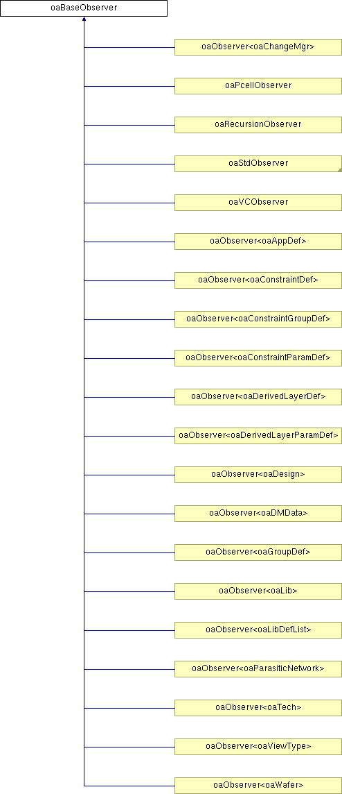

oaBaseObserver Class Reference
Inheritance diagram for oaBaseObserver:

Detailed Description
The oaBaseObserver <> class is a base class for oaObservers. It supports functions that set and get the enabled status of an observer object.
See oaObserver for information on using OpenAccess observer classes to derive and instantiate observers in an application.
Constructor & Destructor Documentation
| oaBaseObserver::oaBaseObserver |
( |
oaUInt4 |
priorityIn, |
|
|
oaBoolean |
enabledIn = true |
|
) |
[inline] |
|
|
|
This is the constructor for the oaBaseObserver class. Observers are ordered by priority from lowest to highest.
- Parameters:
-
| priorityIn | priority of this observer relative to other BaseObservers |
| enabledIn | Determines whether this observer is called when an observed event occurs |
|
| oaBaseObserver::~oaBaseObserver |
( |
|
) |
[inline, virtual] |
|
|
|
This is the destructor for the oaBaseObserver class. |
Member Function Documentation
| void oaBaseObserver::enable |
( |
oaBoolean |
enabledIn |
) |
[inline] |
|
|
|
This function sets the enabled status of this observer according to the enabledIn parameter passed to the function.
- Parameters:
-
| enabledIn | specify true to set enable this observer; false to disable this observer. |
|
| oaBoolean oaBaseObserver::isEnabled |
( |
|
) |
const [inline] |
|
|
|
This function returns true if this observer is enabled; otherwise, it returns false. |
The documentation for this class was generated from the following files:
Return to top of page
Copyright © 2002 - 2010 Cadence Design Systems, Inc.
All Rights Reserved.